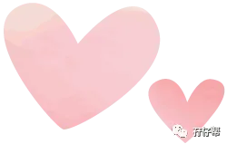
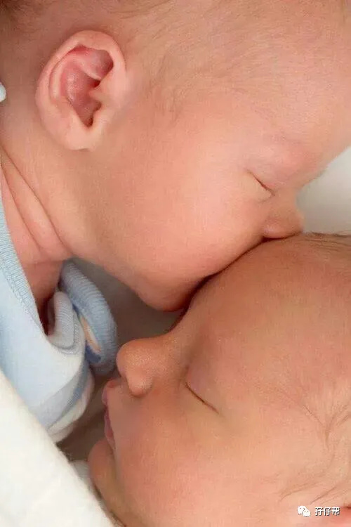
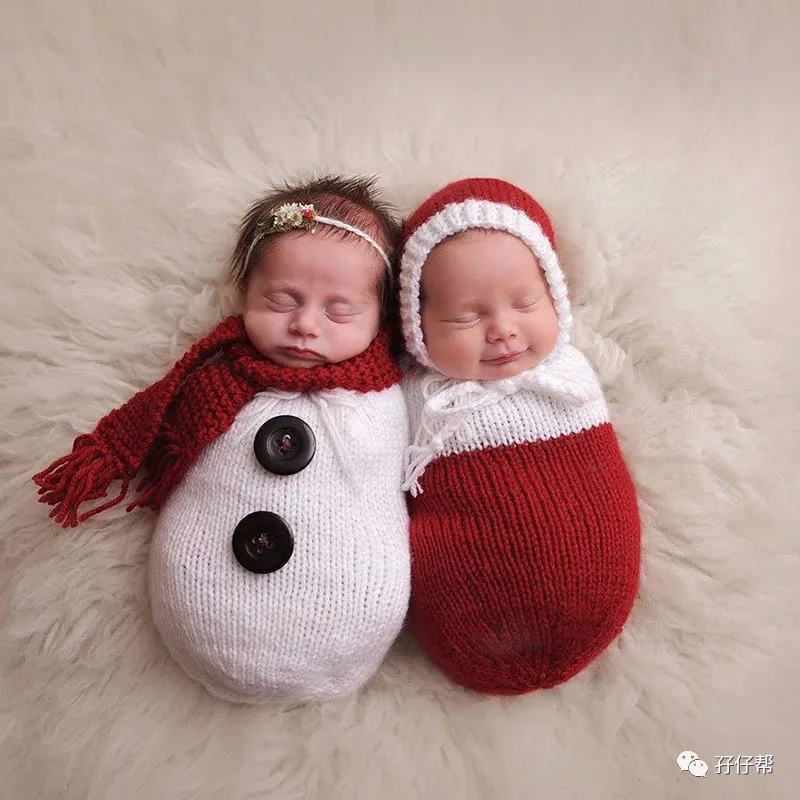
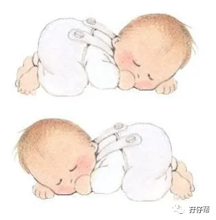

文|圆圈妈，一个文思如尿崩的双胎妈妈
图|来自网络，如有侵权，请联系删除
· 正 · 文 · 来 · 啦 ·
如果有人问我，养育双胞胎哪个阶段最凄惨？
如果非要给个确切的时间段，那我会毫不犹豫地回答：“2月龄”
2月龄最凄惨，是因为此时的大多数双胞胎宝宝清醒的时间较长，但依然毫无规律，加之不可抗力因素太多，让人极度抓狂崩溃。
颇有一种看不惯你却又奈何不了你的架势！
今天的推文主题：
浅谈2月龄的双胞胎睡眠特点
以下文字节选自《双胞胎睡眠圣经》第二部分第五章：不同年龄段儿童对睡眠的不同需求。
当你的双胞胎宝宝们继续成长,你会发现他们的睡眠习惯也随之改变。
他们在24小时内的总睡眠需求时间会从之前的15-17个小时下降到13.5个小时,然后再攀升到14个小时。
在预产期过后6周左右,婴儿们的生理睡眠节奏开始显现,父母们可以开始给孩子制定一个合理的夜间入睡和早晨起床的时间表。
在这14个小时里,夜间睡眠应该占到8-9个小时,即便孩子们在夜间还不能睡整觉。
另外的5个或者5个半小时的睡眠则是来自于断断续续的日间小睡。
大部分父母依然会选择在这一段时间内把两个宝宝放在不同的婴儿床里睡觉,以便给宝宝们提供更大的空间去随意蠕动和伸缩。
在6周之前,宝宝们的单次最长睡眠时间大概也就是2-3个小时,而且还可能发生在24小时里的任何时间段中,给父母的照看和休息都带来很大的麻烦。
而一旦到了第6周,单次最长睡眠时间就会奇迹般地延长到4-6个小时,而且这次睡眠有很大几率会发生在傍晚或者夜间。
在这之前,许多父母已经绝望了,他们不敢相信这样的好事会这么快就来临。
夜间睡眠规律是自然形成的,父母所使用的各种睡眠训练方法可以帮助孩子入睡和提高睡眠完整度及质量,但并不会创造或者改造睡眠规律。
最开始时,可能是双胞胎中的某一个宝宝首先开始在晚上入睡,另一个可能需要稍微多一点的耐心,但不久之后，两个宝宝都会习惯把最长的那一觉留到晚上再睡。
在这一阶段,父母依然不能奢望可以在夜里睡一个整觉,但至少可以有4~6个小时的整块时间可以休息,跟之前相比,已经大有进步。
刚才我们讲到,处于这一阶段的宝宝们通常会拥有更长时间的单次睡眠以及更长时间的清醒状态,伴随着这个积极变化同时发生的还有一个负面影响,那就是宝宝们会比之前更加易怒,更加难以取悦。
宝宝们的哭闹烦躁可能会发生在一天中的任意时间,但一般而言在清晨和夜晚最为集中,哭闹程度也最为厉害。
宝宝们经常会在晚上11点或12点左右突然爆发,而这个时间可能正是大人们忙完所有工作准备上床睡觉的时候,也是大人们误以为宝宝们要进入深度睡眠的时候。
并不是每个宝宝都会出现这种情况,但出现这种情况的宝宝大多被认为是由于腹痛等原因而导致极度难以取悦。
如果出现这种极度难以取悦的状况,那么父母应该考虑把两个宝宝暂时分开。
因为现在这个阶段已经不同于最开始,如果不分开两个人的话,极度狂躁的宝宝有可能影响到另一个的正常休息。
如果一个小宝宝在24小时中有超过3个小时的时间都在哭闹,并且这种哭闹必须通过父母的安抚才能得到缓解，然后这种情况每周都至少会出现3次,并且会持续长达3周,那么这种症状就会被定义为婴儿急性腹痛。
曾经出现急性腹痛症状的婴儿们很难学会自己入睡,入睡以后也很难保持深度睡眠。如果他们的急性腹痛症状得不到解决,即便我们遵循了睡眠训练的所有步骤,也无法帮助他们更好地入睡。
一旦双胞胎宝宝中的一人或者两人出现了急性腹痛或者极度烦躁的症状,仅靠一个成年人是绝对不可能同时满足两个孩子的需求的。
如果你的另一半不在家,你一时也不能找来多余的帮手,那你必须学会分辨轻重缓急:先照顾症状严重的一个。
当然,在两个宝宝都出现不良反应的情况下,找更多人来帮忙是最佳的选择,即便这意味着你需要另花钱去雇人.那也是值得的。
几乎所有糟糕的事情都会在双胞胎宝宝们长大到6周左右时出现转机。
除了我们刚刚谈到过的这些睡眠和作息习惯之外,最大的惊喜和幸福就是,从这时起,你的宝宝们要开始露出真正的笑容了!
和从前那些无意识的笑完全不同的是,现在宝宝们时不时露出的笑脸都是在有意识地对父母做出回应。
个人拙见
经常听过来人提起，小婴儿出月子后就会好带点，可对于我来说，进入2月龄才是噩梦的开始。
圆圈兄弟满38天，双双肺炎，再次进入新生儿科，圆圆还合并脑炎去了NICU，上了无创呼吸机。
我们还没有从极度缺觉中回过神来，就被一张张病危通知书吓到茶不思，饭不想，夜不能寐（这是一段很痛苦的经历，我至今还无法释怀，此处详情略过…）
哥俩在新生儿科呆了半个多月后陆续出院了，像上次出院那样，从医院回来后，他们又昏睡了两天两夜（怀疑是医院给他们用了镇静剂）
再一次经历与死神的搏斗，我们都深刻明白一个道理：只要娃娃们不生病，所有的折磨都是好事！
这时，唯一有带娃经验的小姑子回老家了，我们的“五人军团”变成了“四人帮”！少了一个得力帮手，我们有一种承重墙被敲掉了两边的感觉！
据说，刚出生没有母婴同室而是去了新生儿科的小婴儿大都没有安全感。
这话套在圆圈兄弟身上真是对极了！而且他们还是在一个月内光顾了两次新生儿科。
我不知道这是不是没有安全感的表现，总之，从医院回来后，他们尤其爱哭！几乎每时每刻都在哭！睡着了也会突然大哭！
这种哭，异常凄厉！且难以安抚！
不像刚出生那会儿，饿了哭，尿了哭，更多的是不明原因的哭泣。
最让人心碎的是，他们哭的时候会憋气，一口气顺不下来那种，每次大哭后，口唇都发紫，好一会儿才恢复正常。
我们咨询了儿保科医生，说这种哭是小儿屏气呼吸综合征，常见于早产儿，贫血儿，先心等！
很不巧，他们哥俩都全中了！
早产，贫血，动脉导管未闭。
医生说没办法，这是发育问题，只能靠自愈！尽量减少哭泣！可是让两个只有两个月大的小婴儿不哭是不可能的！
这种哭闹直接影响了他们的睡眠，因为睡不好，他们哭得更凶了！
看的出来，他们其实很困，很想睡，可是因为不明原因，比如马克提到的急性腹痛（肠绞痛）无法睡下，只能不停地哭！即便是睡下了，依然哼哼唧唧，始终是浅睡的状态，无法进入深度睡眠。
我被折磨得快要忧郁症了，每当黑夜降临就莫名的恐慌。
好不容易对他们的睡眠习惯摸出点规律，被他们这种不明原因的哭闹这么一折腾又彻底凌乱了。
时至今日，我终于领教到双胞胎相互干扰的一面了。
圈圈哭的时候，圆圆通常是安静的！因为圈圈哭得实在凄惨，把本来在睡觉的圆圆吵醒了，圆圆被吵醒，没睡不好，也跟着哭！
妈妈们经常问到“双胞胎宝宝要不要分开睡”，其实并没有绝对答案，而是看实际情况！
若放在一起相互干扰的情况太严重，如一方哭闹，严重影响到另一方的正常休息时，把他们分开就是上上策！
也许是在医院走一遭被吓到了，他们终于知道世上只有妈妈好...也许是他们的成长发育到一个新阶段，他们体内的生物钟开始发挥作用了...
接近2月龄的尾声，他们终于可以神奇地连续睡3个小时以上了，而且白天也能断断续续地小睡下，每次都能持续1个小时，且不会哼哼唧唧的样子。
我们有一种即将要被砍头，但后来被莫名其妙地赦免了的感觉！
阿弥陀佛！
-END-
今日互动话题
#面对2月龄的双胞胎宝宝，你是怎么熬过来的？#
评论区聊一聊
说说你的经历吧
一好文推荐一
一加入社群一
一关注孖仔帮一
点击“阅读原文”，直达双胞胎育儿网站www.sgguy.com.
喜欢这个睡眠圣经吗？，请点“在看”



